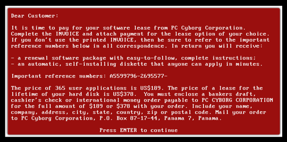
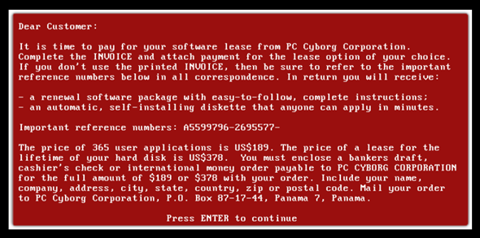

Malwares
1949: The theory of self-replicating computer programs by John von Neumann
To understand the characteristics of malwares, we’ll have to analyze a machine constructed by a mathematician/computer scientist named John von Neuman. In the year 1949, this Hungarian-American had a goal to devise a machine which would have the same behaviour as that of a biological organism under natural selection. He was asked how complex this machine would go, he then answered, it would be a device that “when run, would replicate itself”. In more detail, his self-replicating machine would be split into three parts: The “description” of its own design, the constructor that can read any blueprint and manufacture it, and the “universal copy machine” that replicates any description. After the constructor creates a machine, the copy machine essentially copies the “description” and places it into the newly made machine. We could see the same actions happening with malwares, for example, a worm. Much like Neuman's device, worm malwares can duplicate and transfer itself from device to device independently.
1971: The “Creeper” virus written by Bob Thomas. First detected on ARPANET.
The first malware program ever recorded was the creeper program, which was written in 1971 by Bob Thomas. It was designed to move between mainframe computers (which are used for bulk data processing i.e. statistics) running a TENEX operating system. Later, An individual named Roy Tomlinson modified the creeper program to copy itself between the computers rather than just move.The updated version of the creeper is generally considered to be the first ever computer worm. However, It’s purpose was not at all malicious, it never destroyed or caused damage to any data. It's only intention was to print the following message: "I'M THE CREEPER; CATCH ME IF YOU CAN".
 

1989: The "AIDS Trojan" written by Joseph Popp. The first known malware extortion attack.
In 1989, Biologist Joseph Popp attended a World Health Organization’s AIDS conference. In this conference, he handed out 20,000 floppy disks labeled as “AIDS Information Introductory Diskette” to the attendees. Turns out, the disk was the earliest recorded ransomware and it was named AIDS (Tojan horse) virus. When the attendees inserted the disk and opened the software for the first time it was disguised as a survey for AIDS. Little did the owners know, the virus had already planted itself in AUTOEXEC.BAT, a startup file used by the Windows operating system during that time. It lay dormant until a certain requirement was met. The system had to startup at least 90 times for it to activate. After the malware has triggered, it encrypts all of the files in the C: drive. The files content weren’t rewritten or anything of that sort, it just manipulated the extension names so that it prevents the owner from executing the files, in other words, they can’t open it. After the encryption, the malware would then print a message which told the users that the lease of the software made by PC Cyborg Corporation has expired and they were required to pay a fee that would extend their “subscription” for a year if they paid 180 USD or they can extend it for a lifetime if they paid 378 USD. They were instructed to mail the money to a PO box in Panama. When users reboot their systems to avoid this, the message inevitably pops up again and again. However, with the unusual way of payment for this service, users were skeptical and avoided paying. Some panicked, completely wiping their hard drives, losing years of data and research. Although this ransomware wasn’t completely successful in generating money, it jump started the idea of using malware as an upper hand to gain money. As for Joseph Popp the creator of the malware, he was arrested in January 1990. At an airport, he was investigated and his luggage contained equipment labeled “PC Cyborg Corporation” and it was concluded that he was the author of the ransomware.